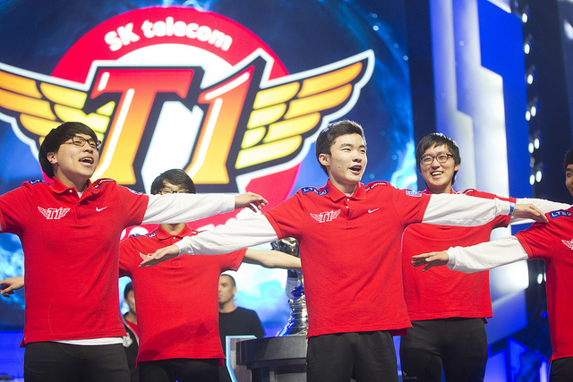
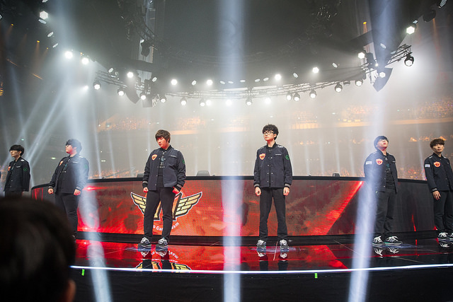
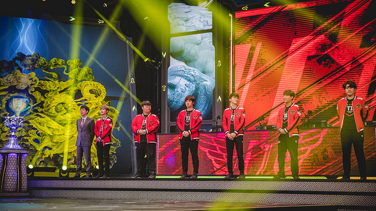
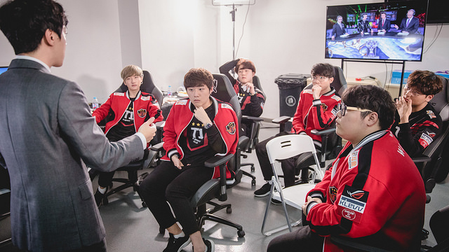

LEAGUE OF LEGENDS
- HOME
- CHAMPIONS
- NEWS
- SIGN UP
- LOG IN
LEAGUE OF LEGENDS
Đội hình của SKT năm nào là phiên bản mà bạn yêu thích nhất?

Có phải là lần đầu tiên, vào năm 2013, khi mà Lee “Faker” Sang-Hyeok vẫn còn đang bước những bước đầu tiên để xây dựng lên đế chế SKT? Một đội tuyển khi đó đến với Chung Kết Thế Giới như những kẻ vô danh, suýt chút nữa thua cả Najin nhưng rồi đã bất ngờ có được chức vô địch.

Với phiên bản 2015, thời điểm cả đường trên và đường dưới đều bị thay thế, chỉ còn lại Faker cùng với người đi rừng kỳ cựu Bae “Bengi” Seong-woong? Người ta đã không đặt quá nhiều kỳ vọng vào đội hình của SKT khi đó bởi phong độ kém cỏi ở mùa giải trước đó, cộng thêm việc thất bại trước EDG trong trận chung kết MSI 2015. Nhưng họ nhanh chóng đập tan mọi nghi ngờ khi trở thành đội xuất sắc vượt qua vòng bảng chỉ mà không phải nhận nổi dù chỉ một trận thua, sau đó quay trở lại đỉnh cao thế giới với những chiến thắng cực kỳ ấn tượng.
Một phiên bản mà bạn không thể bỏ qua chính là ở mùa giải 2016. Không mấy ai tin tưởng khả năng bảo vệ chức vô địch của SKT, khi mà ROX Tigers khi đó nổi lên và đang thực sự là tâm điểm chú ý của cả người hâm mộ lẫn giới truyền thông. Và rồi, khi cơ hội đến, SKT đã không bỏ lỡ nó để tiễn ROX về nước, rồi tiếp tục thi đấu đầy bản lĩnh trước Samsung để là đội đầu tiên bảo vệ thành công chức vô địch thế giới.

Còn năm nay thì sao nhỉ? Một đội hình đã toàn siêu sao được công nhận nhưng lại không thể làm khán giả yên tâm. Họ tới với giải đấu danh giá nhất của LMHT khi mà không một vị trí nào có được phong độ ổn định ngoại trừ đường giữa. Nhưng bằng một cách nào đó, SKT hiện tại đang có mặt trong trận Chung kết, tiếp tục khiến những ai đang nghi ngờ họ phải câm lặng, như bao lần khác họ từng làm.
Chẳng còn quan trọng đâu là đội hình SKT mà bạn yêu thích nhất, có một điều rõ ràng rằng: SK Telecom T1 chính là đội tuyển gây mâu thuẫn nhất trong lịch sử.

Qua từng năm, kkOma đã biến SKT dần trở thành một cỗ máy đầy chết chóc nhưng cũng là một đội tuyển đầy sức sống với khả năng thích nghi cực kỳ nhanh. Thương hiệu SKT là không thể xô đổ, dù điều gì có xảy ra chăng nữa. Sẽ luôn là một trải nghiệm tuyệt vời khi bạn được thấy họ thử nghiệm những điều mới mẻ và xem nó hiệu quả ra sao. Và cho những ai luôn chỉ trích họ bởi họ quá thành công, cứ việc bỏ qua số lần vô địch Thế Giới của họ – Chắc các bạn đang đùa tôi? Cái cách mà SKT thi đấu thực sự là một nghệ thuật và hãy thưởng thức nó trước khi bạn không còn cơ hội được chứng kiến thêm một lần nào nữa.
Thật may mắn khi chúng ta sẽ tiếp tục được chứng kiến những con người tuyệt vời đó tiếp tục thi đấu cùng nhau, ít nhất là cho tới thứ bảy tuần này tại sân vận động Tổ Chim, Bắc Kinh. SKT đang thi đấu còn hơn cả vì danh hiệu, bởi lần thứ ba liên tiếp vô địch Thế Giới ư? Đó sẽ là một chiến tích lịch sử, một chặng đường bất diệt của những nhà vô địch.